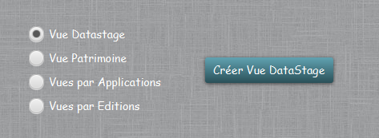
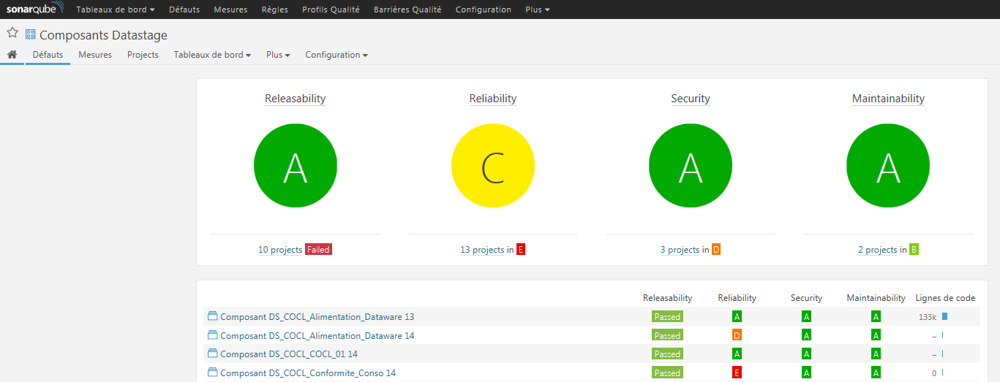
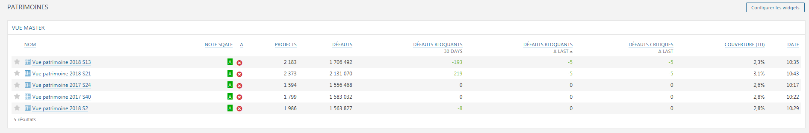
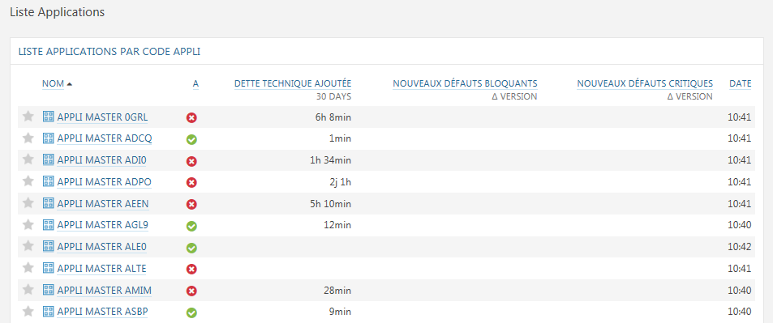
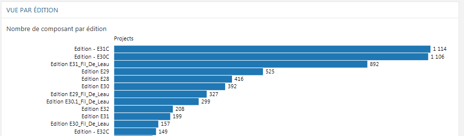

Création autres vues
Cette fonction permet de créer toute une série de vues dans SonarQube :

- Vue DataStage : crée une vue avec tous les composants DataStage répertoriés.

- Vue Patrimoine : Crée une vue représentant une photo du patrimoine pour la semaine en cours.

- Vues par Applications : Crée une vue pour chaque application toutes regroupées dans un DashBoard.

- Vue par Editions : Crée une vue de tous les composants pour chaque édition paramétrée (E30,E31,...)
